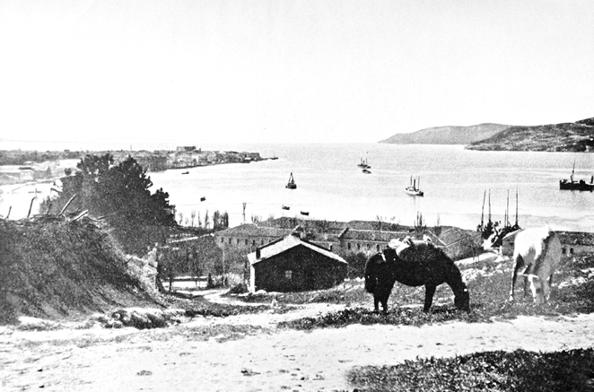
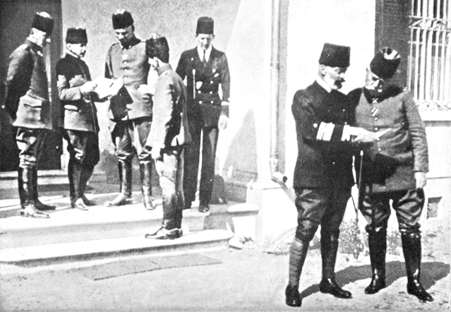

GİRİŞ
Çanakkale ve İstanbul Boğazları, Avrupa’yı Asya kıtasından ayırır. Bu Boğazlarla deniz yolu Karadeniz’den Akdeniz’e gitmekte ve Avrupa’dan Ön Asya’ya uzanan kara yoluyla kesişmektedir. Şimdiye kadar kavimler tarihinde hemen hemen hiçbir zaman bu küçücük bölge bu kadar büyük bir rol oynamamış -dünyanın en mühim ulaşım yollarından olan Boğazlar- bu kadar hararetle arzulanmamış ve tartışılmamıştır. Kazılarda ortaya çıkartılan mevcut duvar katmanları ve istihkâmlar bölgenin kronolojisini milattan önce, 4.000’e kadar, yani taş devrine kadar getirmektedir.
Surları, on yıl boyunca kuşatmada bulunan Yunanlılara mukavemet eden gururlu Truva burada bulunuyordu. M.Ö. 480’de yarı ilah sayılan kahraman Hera (Xerres) salların üzerine oluşturulan iki köprüyle buradan karşıya geçti. Büyük İskender de. M.Ö. 334’te savaşçılarıyla Asya yolunu ele geçirdi. İmparator Friedrich Barbarossa idaresindeki Haçlı şövalyelerinin 1190’da kutsal vatan (Kudüs) topraklarının kurtarılması için yürürken çıkan nal ve silah sesleri bu derin vadilerde yankılanmaktaydı. Burada Bizans İmparatorluğu’nun mükemmel metropolü olan Bizans ortaya çıktı, ihtişam ve zenginliğe ulaştı.
Daha sonra 1354’te Asya’dan Osmanlı denen vahşi ve savaşçı bir kavim geldi. Bütün Küçük Asya ona tabi kılındı, onları Viyana kapıları önlerine kadar götüren zafer yürüyüşünü Boğazlar bile durduramadı.
Böylece Osmanlı, Boğazlar üzerinde hâkimiyet elde etti, yüzyıllar boyunca saldırılara karşı Boğazları mükemmel bir şekilde müdafaa etti ve bugün de Dünya Savaşı’nda verdiği büyük mücadeleden sonra buraları sağlam bir şekilde elinde tutmaktadır.
Türkiye haklı olarak, büyük Petro’dan (Peter) beri yılmadan, usanmadan Konstantinopol’ün (İstanbul) ve Boğazların fethini kendine hedef edinen komşusu Rus İmparatorluğu’nu tarihî düşman olarak algılamaktaydı.
Güney Rusya’nın devasa boyuttaki zengin bölgelerinden yapılacak ihracat tamamen deniz yoluna bağımlıydı.
Ancak Rus ekonomisinin kısıtlanması manasına gelen, gemi trafiği için Boğaz yolunu kapamak, transit geçişi durdurmak her an Türkiye’nin isteğine kalmıştı.
1912 – 1913 Balkan Savaşları esnasında bu ulaşım damarlarının kapatılması gerçekleşti ve bu yüzden milyonlarca çuval (her biri 50 kg.) tahıl Rusya’nın Karadeniz limanlarında çürümeye terk edilmek zorunda kalındı. Rusya bu savaşlara katılmamasına rağmen çok fazla etkilendi bütün ithalatı durdu.
Rusya’nın Dünya Savaşı’na müdahalesinin sebebi ittifak üyelerinin galibiyet ödülü olarak Rusya’ya İstanbul’u söz vermeleriydi.
Lakin Rusya asla uzun süre bu galibiyet ödülünü bekleyemezdi, çünkü derhal serbest geçiş hakkına ihtiyaç duyuyordu. Savaş endüstrisi ne milyonluk bir ordunun ihtiyacına göre düzenlenmiş, ne de uzun süreli bir savaşa göre ayarlanmıştı.
Devletlerarasındaki dostane bağlar, birleşik Rusya’nın savaş gücünü devam ettirebilmesi için bol miktarda mühimmat ve silaha sahipti. Fakat Rusya’nın Baltık Denizi limanları Alman filolarıyla kapatılmıştı, Beyaz Deniz’deki Arhangelsk Limanı sadece yaz aylarında buzsuzdu ve Vladivostok’un cepheyle irtibatı 10.500 km. uzunluğunda tek hatlı Sibirya demiryolu vasıtasıyla oldukça yetersiz ve güvensizdi.
Böylece Çanakkale Boğazı, savaşın başında, Rus ordusunun ikmali için en mühim, en kısa ve en güvenilir bir menzil olarak ön plana çıktı. Boğazlardan serbest geçiş Rusya için hayati bir önem taşıyordu Boğazlar tek başına dev heykelin (Osmanlı’nın) vaktinden önce yıkılmasını engelleyebilirdi.
Buna karşın Konstantinopolis ve Boğazlar iddiası Türkiye için hayati ehemmiyet arz ediyordu. Esasen epeydir kifayetsiz olan savaş endüstrisi ve ülkenin bütün idaresi başkentte temerküz etmişti. Türkiye’nin bu üsler olmadan daha kapsamlı bir mukavemeti düşünülemezdi, böylece ülkenin çöküşü gecikiyordu.
Türkiye bu savaşa yeteri kadar hazır değildi. Balkan Savaşlarının yarası henüz kapanmamıştı, mali durumlar bozulmuş, hemen hemen mühimmatsız ve savaş alet ve cihazlarından yoksun olan ordu bir çöküş durumuna gelmişti.
Bundan da anlaşılacağı üzere bu hususta miyar kabul edilen hükümet çevrelerinin büyük bir kısmı kesin bir tarafsızlıktan yana tavır koymuştu. Bu tavır dostluğa dayalı bir diplomasiyi ve Amiral Limpus idaresindeki İngiliz deniz gücünün büyük desteğini beraberinde getirmişti.Fakat böyle bir tarafsızlık mümkün müydü?
İngiltere’nin baskısı altındaki Türkiye’nin tarafsızlığı, gerçekte nakliye gemilerinin engelsiz bir şekilde Rusya’ya mühimmat temin etmek için Boğazlar yolunu kullanabilmesi anlamına geliyordu. Bu cebri ve tek yönlü tarafsızlığın neticesi olarak Bulgaristan ve Romanya derhal (dostluğa dayalı ilişkiler sebebiyle) silaha başvurmuş, ordularını Avusturya – Macaristan’a karşı harekete geçirmişti.
Bunun engellenmesi gerekiyordu. Almanya, düşmanlarına Batı ve Doğu cepheleri arasında bir kalkan oluşturmak için Türkiye’yi müttefiki yapmak zorundaydı. Bu konuda, Türkiye’nin ittifak güçleriyle hangi kaderi paylaşacağını tam olarak bilen diğer Türk vatanseverleri de hesaba katılmalıydı.
Paris’teki Rus büyükelçisi Z(T)Wolski’nin tek bir telgrafı hükümetine ulaştığında, -ki bu telgraf bilahare müttefik güçlerin de eline ulaşmıştır (Almanya, Avusturya – Macaristan ve daha sonra da Bulgaristan), her Türk devlet adamının gözlerinin açılması gerekiyordu. Fransız hükümetinin görüşüne göre bu telgrafta, Türkiye’ye sunulan garanti teklifiyle, savaşın bitiminde Boğazlar Meselesi’nin Rusya’nın arzuladığı görüş doğrultusunda çözümünün engellenmediği belirtiliyordu. Bundan da mantıki olarak, daha sonra İngiltere ve Fransa’nın da Türkiye’nin silahsızlandırılmış birkaç bölgesini kendilerine mal edebilecekleri -ki bu bölgeler savaştan sonra Cemiyeti Akvam tarafından “manda bölgeleri” olarak tayin edilecek yerler olacağı- neticesi çıkmaktaydı.
Kararlı Türk vatanperverleri için Türkiye’nin kaderinin tarafsızlar tarafından mühürlendiği ve müttefiklerin içinde bulundukları savaşta, yaklaşan bir çöküşte kaçabilecekleri fikrine açık kapı bırakılmıştı.
Böylece, aralarında gizli dostluk antlaşmaları bulunan devletlerin politikaları ve bu politika içinde saklı olan gizli ilhak arzuları, Alman ve Türk menfaatlerini kaynaştırıyordu.
3 Ağustos 1914’te Almanya ile Türkiye arasında ittifak antlaşması imzalandı. Buna rağmen Türkiye, Almanya Batı ve Doğu cephelerinde savaşa başlamışken, hâlâ tereddütlü bir tutum sergiliyordu.
Sadrazam ve kabine üyelerinin çoğunluğu bilhassa eksik donanımlı bir deniz gücünü, çabuk karar vermelerini engelleyen bir faktör olarak görüyordu. Ancak bu arada Almanya’nın müzakere zeminini oldukça kuvvetlendiren bir hadise oldu: 10 Ağustos 1914’te Amiral Souchon idaresindeki “Goben” zırhlı kruvazörü ve küçük “Breslau’’ kruvazörü, üstün düşman güçlerinin hâkim olduğu Akdeniz’den geçerek Çanakkale Boğazı’na girdi. Amiralin karar gücü, cesareti, savaş hırsıyla birleşerek büyük askerî ve siyasi başarılar elde etmişti. Birkaç gün sonra her iki gemi resmen Türkiye’nin mülkiyetine geçti ve Türk bayrağı (bandırası) altında Altın Boynuz denen Haliç’e demirledi.
Rahatlıkla ifade edilebilir ki bu iki Alman kruvazörü gibi münferit savaş gemileri bir ülkenin politikasını böylesine bir şekilde etkilememiştir.
En sonunda Türkiye’nin ve Bulgaristan’ın, müttefik güçlerin tarafında yer almasının sadece “Goben” ve “Breslau”un ortaya çıkmasına bağlanacak olursa fazla bir şey iddia edilmemiş olur.
Türk donanması çok daha kötü bir durumda bulunuyordu ve kesinlikle savaş gücü yoktu. 1877’den beri hiçbir Türk savaş gemisi Karadeniz’de gözükmemişti. Gemiler gayri faal olarak İstanbul Boğazı’nda demirli kaldılar ve açıkça “Mukim Gemiler” olarak ifade ediliyorlardı.
Büyük bir enerji ve titizlikle Amiral Souchon, yeni Türk donanma komutanı sıfatıyla donanmayı savaşa hazırlama çabalarına girişti. Ateşli bir gayret, güçlü bir enerji ve büyük bir iştiyakla Alman subaylar ve ekipler kendilerini bu vazifeye hasretti.
Aynı zamanda Boğazlardaki tabyaların tamirine de başlandı. Orduları mobilize etme çabaları bütün hızıyla devam ediyordu.
Türkiye’nin savaşa girişini daha da geciktirmemeleri için donanma ve istihkâmların savaşa hazır olduğu eylül ortasında açıklandı. Buna rağmen sadrazam ve kabine hâlâ nihai kararı vermekte tereddüt ediyordu, çünkü onlar Marne’deki Alman ordularının ve Avusturya-Macaristan birliklerinin Karpatların arkasına çekilmelerinden sonra, imkânları daha iyi görmek istiyorlardı.
Almanya’dan sürekli olarak Türkiye’nin hücuma geçmesini çabuklaştıracak olan teşvikler (tahrikler) geliyordu, ancak Türkler bir karara varamıyordu. Böylece bir ay boyunca verimsiz görüşmeler sürüp gitti.
Amiral Souchon, kendisinin müessir bir biçimde desteklenmemesi durumunda, yakın bir gelecekte Türk vatanperverlerinin hükümetin erteleme taktiğine karşı başarılı olamayacağına kanaat getirmişti. Bu arada ekim ortası olmuştu ve cephelerdeki durum harekete geçmek için sıkıştırıyordu. Bu arada Amiral bütün sorumluluğu üzerine almaya ve asla dönüşü olmayan bir yola karar verdi. Böylelikle enerjik, mümtaz Savaş Bakanı Enver Paşa nezdinde tam bir destek buluyordu.
22 Ekim’de Amiral Souchon Enver Paşa’dan mühürlü bir yazı aldı. Yazı şöyle diyordu:“Türk Donanması Karadeniz’deki deniz hükümranlığını elde etmelidir. Rus donanmasını arayınız ve bulduğunuz yerde savaş ilan etmeksizin saldırınız.”’
27 Ekim 1914’de, Alman sevk ve idaresindeki Osmanlı donanmasının kruvazörler ve torpido botları sahilleri aydınlatarak Karadeniz’e hareket ediyordu.
29 Ekim sabahı saat dörtte aleni bir Rus telsizinde şu sözler yankılanıyordu: “Bon Odessa (Yaşa Odessa). Savaş başladı.” “Topçu Gemisi Kubanef parçalandı.” Savaş gemisi Odessa Limanı’na gider ve gemileri parçalar.’’
Bunlar, kimse fark etmeden Odessa Limanı’na girmeyi başaran “Gayret” ve “Muavenet” torpido gemileriydi. “Goben” seher vaktinde Sivastopol önlerinde görüldüğünde, hemen ateş açan istihkâmı muharebeye hazır buldu.
“Goben” tabyaları bombardımana tuttu, liman ağzında demir atan Rus filolarına birkaç yaylım ateşi açtı ve sonra da boş yere Yalta’dan gelen Sivastopol’a ulaşmayı deneyen mayın dikme gemisi “Pruth”u batırdı. Aynı zamanda küçük kruvazör “Breslau’’ ve “Berk” Novorossi petrol tanklarını ateşe vermişti.
Böylelikle zarlar atılmıştı. Artık ne Türkiye ne de Rusya için geri dönüş yoktu. Rus, İngiliz ve Fransız büyükelçileri pasaportlarını talep ettiler ve Konstantinopol’ü terk ettiler. Birden bütün dünyanın bakışları Boğazlar ve küçük yarımada Gelibolu’nun üzerine çevrildi. Gerçekten dünyanın savaşlar yönünden zengin tarihi asla mekân olarak böylesi bir sıkışık savaş meydanı görmedi.
Galibiyet ve yenilginin bıçak sırtında bulunduğu, stratejik ve politik açıdan her iki taraf için tehlikenin olduğu, buradaki gibi dramatik anlarla dolu bir savaş yoktu. Her türlü deniz gücünün ve ordunun bütün silahlarının dar bir alanda karşılıklı işbirliği içinde Çanakkale’yi ele geçirmek için bu savaşlardaki gibi birlikteliği henüz görülmemişti. Bir tarafta modern silah ve bol mühimmatla üstün kuvvetler, diğer tarafta ise yetersiz savunma araçlarına rağmen inançla ve hırsla savaşan, asla sarsılmayan ve baş eğmeyen, kaçmayan mükemmel Anadolu askeri.
Türk ordusu bu savaşlarla tarihine en güzel şeref sayfalarından birini eklerken, bu konuda en büyük pay orada savaşan Almanlara aittir. Sayıları azdı ama general ve amiralinden en alt kademedeki topçusuna kadar tesirleri mühimdi. Gelibolu’yu bir Alman general savunuyordu. Çanakkale Boğazı ve donanma Alman amiralin idaresine bırakılmıştı, her Türk karargâhında, her tabyada, her bataryada Almanlar görevliydi. Almanların organizasyon kabiliyeti, hayal gücü sevk ve idaresi, en çaresiz durumlardaki müdahaleleri olmasaydı Türk ordusu asla zafere ulaştırılamazdı ve üstün düşman gücünün taarruzu hiçbir zaman engellenemezdi.1

Çanakkale Boğazı, Çanakkale’ye bakış

Çanakkale’nin savunucuları, Amiral Usedom ve Amiral Mertin konuşurken
Bunlar sadece 500 kişiydi, bunların kahramanlıkları Alman halkının içinde unutulmadan kalmalıdır. En umutsuz anlarda bile mükemmel bir dayanışma ruhuyla bu zor durumdan kurtulmayı başarmalıydılar.
Bu, ruhun maddeye galebe çaldığı, bir araya toplanan arzu ve isteklerin bunaltıcı maddi yapının üstüne çıktığı, ruhi gücün maddi gücün üstünde olduğunu gösteren bir zaferdi.
Bu büyük tarihî hadise her şeyden önce gençliğimize daima bir misal olarak kalmalıdır. Bu vaziyet gençlerimize samimi bir arzuyu, sebat ve organizasyon kabiliyetiyle birleştiren bir avuç Alman’ın ve fanatiklik derecesinde vatan sevgisiyle dolu, ölüm korkusu tanımayan Türk askerinin, başarıya olan sarsılmaz inancının nasıl mükemmel bir zafere ulaştığını göstermelidir.
1 Editörün Notu: Alman subayın bu ifadelerini ve kitabın ilerleyen sayfalarında sıkça karşılaşılan benzer subjektif yorumlarını her hatıratta karşılaşılabilen kendini ve bağlı bulunduğu milleti üstün gösterme ve bütün başarıyı kendine mal etme çabası olarak değerlendirmek gerektiği kanaatindeyiz.